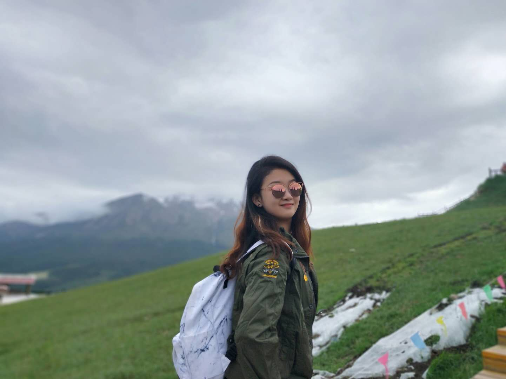
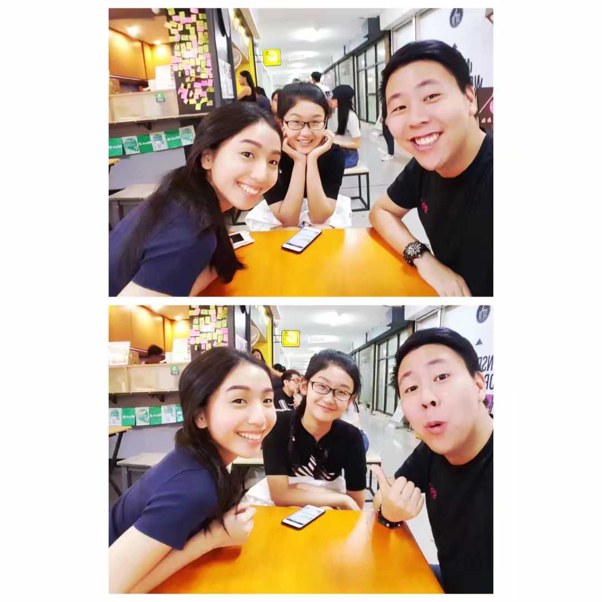
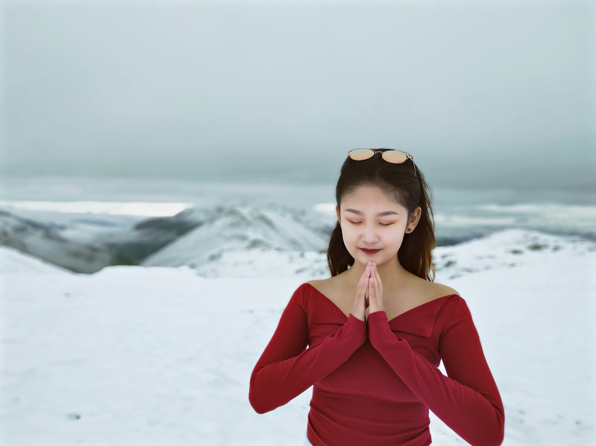

Tibet has alway been a mysterious place to me, so I decided to have a visit this summer. Lying on the world’s highest Qinghai-Tibet plateau, this far-flung destination requires a lot of preparation. My favorite part would be watching the horse festival and learn about the nomads culture!
As a spontaneous traveller, I decided to fly to Bangkok on my 18th birthday and meet up with my Thai friends. Marvelling at the gleaming temples, catching a tuk tuk along the bustling Chinatown, and take a longtail boat through floating markets gave me unforgettable memories.
Named after Qinghai Lake, the largest inland saltwater lake in China, Qinghai Province is located in the northeastern part of the Qinghai-Tibetan Plateau in western China. Even in July, you can explore the winter wonderland full of real snow.
You can either travel or read,
but either your body or soul must be on the way.